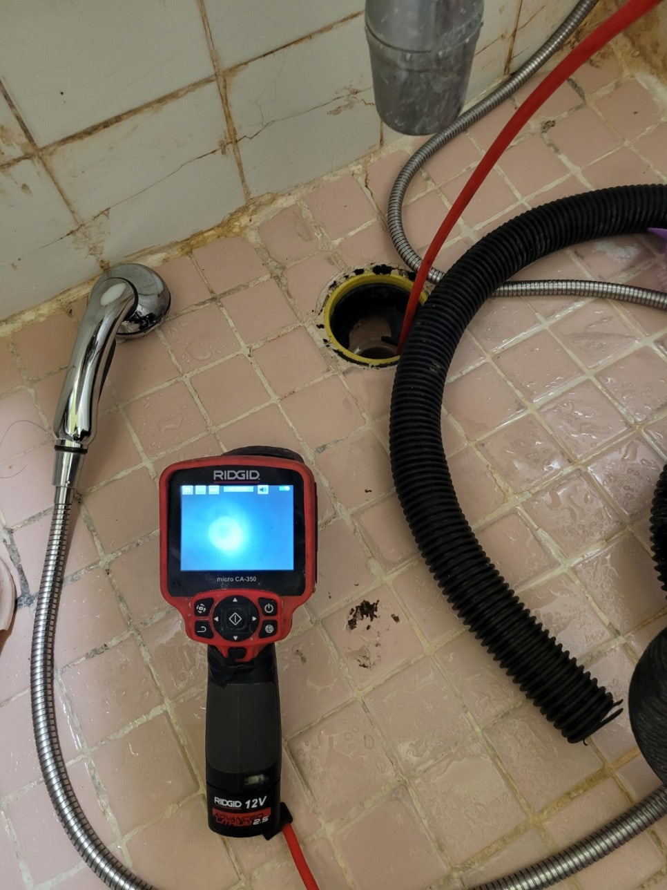
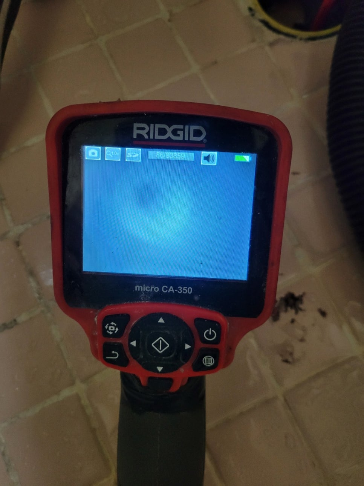
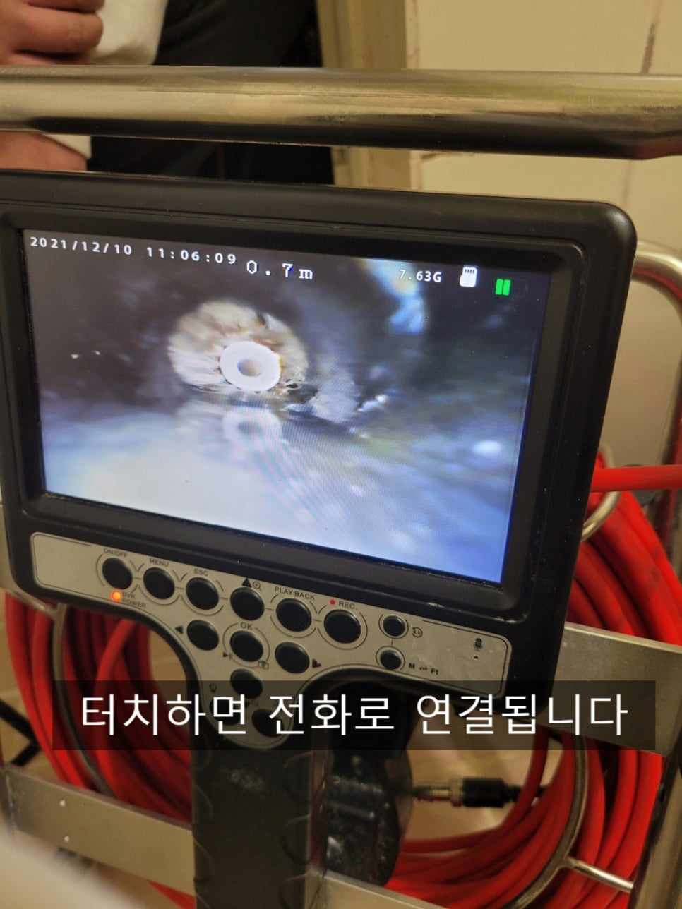
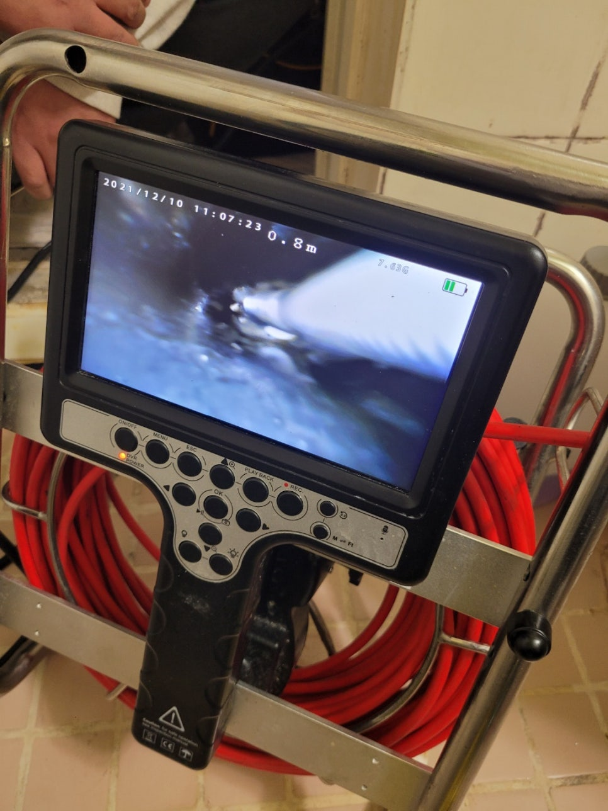
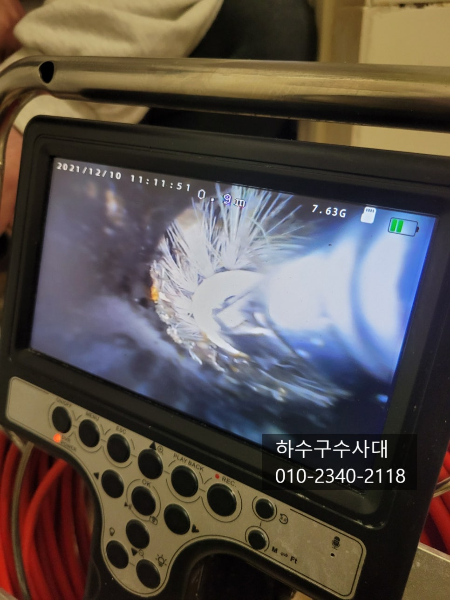
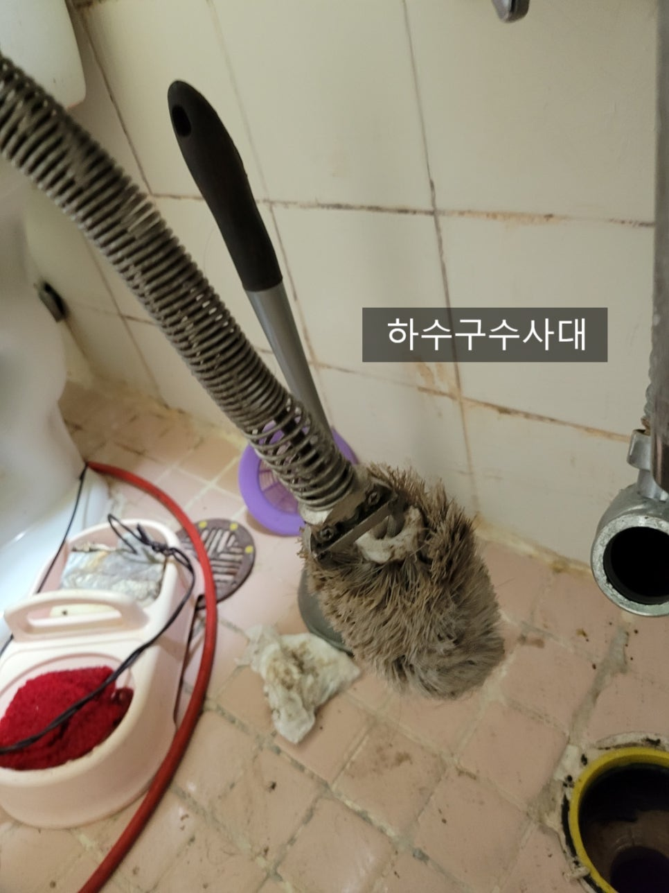
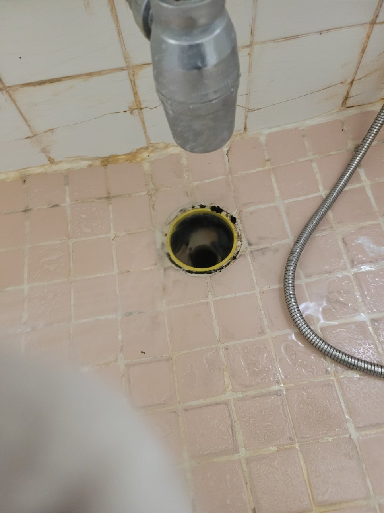

🏠 욕실하수구막힘 청소솔박혔을때
용인 변기막힘 전문 시공 후기

📋 작업 개요
- 위치: 용인
- 서비스 유형: 변기막힘, 하수구막힘, 배관막힘, 뚫는업체, 배관청소
- 작업 일시: 2022. 3. 15. 23:45
- 업체명: 하수구수사대 (010-5615-2118)
🔍 문제 상황
욕실하수구막힘 청소솔박혔을때
안녕하세요
"하수구수사대" 입니다.
오늘은 욕실하수구막혔다는 연락을받고
출동한 현장을 포스팅 해보겠습니다.
화장실바닥과 세면대에서 물을 틀면 물이
차오르는것을 확인 할수 있었어요.
아주 조금씩 내려가다보니 샤워를 하거나 세면대
물을 좀 틀어놓으면 바로 물이 차오르고 있었는데요
고객님께서는 처음엔 별 말씀을 안하고 계서서
일반적인 머리카락이나 석회 때문에 막혔을거라고
예상을 하고 작업을 진행하였습니다.
우선 내시경카메라를 통해확인을 해보았는데요
물이 차있다보니 시야확보가 되지 않았습니다

🔎 원인 분석
💡 전문가 진단: 수도권 전지역 출장가능최신장비 다량보유1년 AS 보장하수구수사대010-2340-2118
물을 석션으로 빼는 작업을 해주었는데요 석션기가
흡입력이 좋아 이물질을 빨아들이기도 하지만
무엇이 박혀있는지 좀처럼 나오지 않았어요.
물을 빼낸후 내시경카메라로 확인을 해보니
변기청소할때 사용하는 청소솔이 박혀 있었어요.
고객님께 보여드리니 얼마전 물이 잘 내려가지
않는것 같아 청소솔로 뚫으려고 하수구에 넣었는데
그만 이음부분이 빠져 버렸답니다.
혹때려다 혹붙인격이 되어 버렸는데요
어찌 됐든 청소솔을 빼내기 위해 작업을 진행하였습니다
석션으로는 꿈쩍도 하지않아 옷걸이를 이용해 보았는데
청소솔이 얼마나 꽉 끼어있는지 꿈쩍도 하지 않았어요.
옷걸이,스프링 등등 이방법 저방법 시도해 보았지만
빠지지 않았습니다.

🔧 작업 과정
최종적으로 두가지 방법이 있었는데요 한가지는
밑에집 욕실에가서 천장을 열고 배관을 잘라내고
빼내는방법이 있었지만 밑에집에 사는 분들과
연락도 안되고 고객님께서도 밑에집까지 피해를
주기는 싫다고 하여 남은 한가지 방법을 사용하였습니다.
그 방법은 최근에 나온 장비를 구입하는 건데요
일명 "아빠손집게" 라는 장비가 있는데 인터넷가격이 45만원짜리
장비를 구입하여 빼내는 것이 였습니다.
자주 사용하지는 않지만 꼭 필요하겠다고 생각하여
구입을 한후 작업을 진행 하였습니다.
하지만 생각보다 청소솔빼는게 쉽지는 않았는데요
가운데 플라스틱 부분을 정확하게 잡아야하는 문제가 있었습니다.
여러번의 시도끝에 가운데 부분을 정확하게
잡았는데 그래도 쉽게 나오지는 않았답니다.
집게를 왼쪽 오른쪽 회전시키며 걸리지 않게 여러번
시도를 해주었습니다.
아무래도 하수구배관은 50mm 인데 청소솔은
직경이 75mm정도 되다보니 솔이 배관을 꽉잡고 있더라구요.
여러번의 시도끝에 청소솔을 드디어 빼내는데
성공했습니다.
정말 쉽지 않은 작업이였지만 빼내고 나니
속이 후련하더라구요^^
청소솔이 변기에 박혀서 빼본적도 있지만


✅ 작업 완료
하수구에 박혔을때는 더 힘든것 같습니다 ㅎㅎ
수도권 전지역 출장가능
최신장비 다량보유
1년 AS 보장
하수구수사대
010-2340-2118



⚠️ 하수구 배관 막힘 예방 및 관리 가이드
- ✅ 머리카락, 비닐, 물티슈 등 물에 분해되지 않는 이물질은 하수구 유입을 절대 금지해 주세요.
- ✅ 하수구 거름망을 씌우고 모여진 이물질은 주기적으로 쓰레기통에 바로 비워주셔야 합니다.
- ✅ 배관 노후가 심할 경우 이물질이 더 쉽게 걸리므로 주기적인 배관 세척(고압세척 등)을 권장합니다.
- ✅ 작업 후 1년 이내 재발 시 하수구수사대에서 무상 A/S 보증 서비스를 제공합니다.
💡 핵심 정리
- 확실한 장비 작업(내시경 점검 및 샤프트 스케일링)으로 원인을 뿌리 뽑습니다.
- 작업 후 1년 이내에 동일한 부위 재발 시 100% 무상 A/S 서비스를 보장합니다.
- 서울 · 경기 · 인천 전 지역에 24시간 언제든 긴급 출동할 수 있도록 항시 대기 중입니다.
❓ 자주 묻는 질문 (FAQ)
🚨 용인 변기막힘 문제로 고민이신가요?
정확한 원인 진단과 확실한 시공으로 재발 없는 해결을 약속드립니다.
24시간 긴급 출동 | 서울 · 경기 · 인천 전지역 | 1년 내 재발 시 무상 A/S